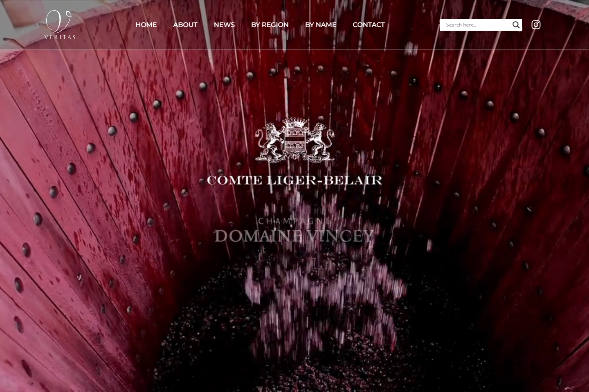
Wine Visit website01
Veritas Wine
A wine-focused website crafted to present the brand with clarity and guide visitors through its collection and story.
View live sitePROJECT PORTFOLIO
From online stores to service businesses and community organizations, each project pairs thoughtful design with a focused, responsive user experience.

Wine Visit websiteA wine-focused website crafted to present the brand with clarity and guide visitors through its collection and story.
View live site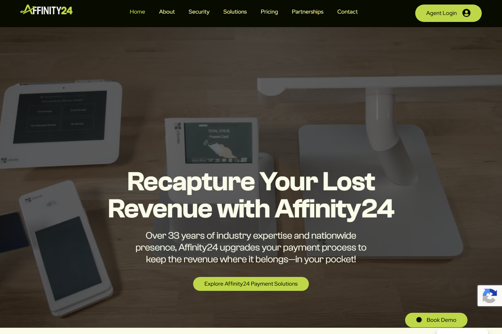
Business Visit websiteA polished professional website that communicates the organization’s value clearly and creates an approachable digital presence.
View live site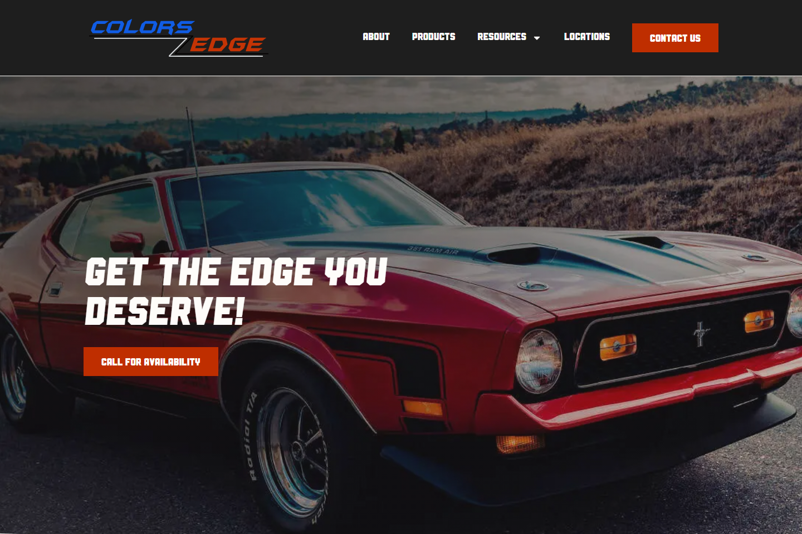
Creative Services Visit websiteA visual, service-led website that helps customers explore Color's Edge and move confidently toward an inquiry.
View live site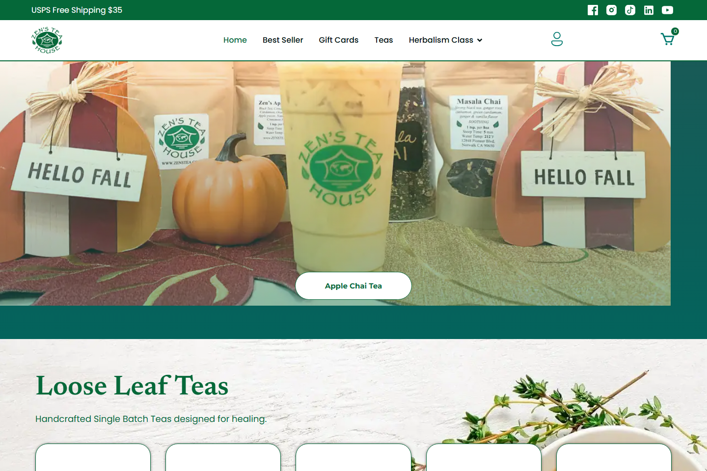
E-commerce Visit websiteA warm e-commerce experience that brings the tea brand, product discovery, and online shopping together.
View live site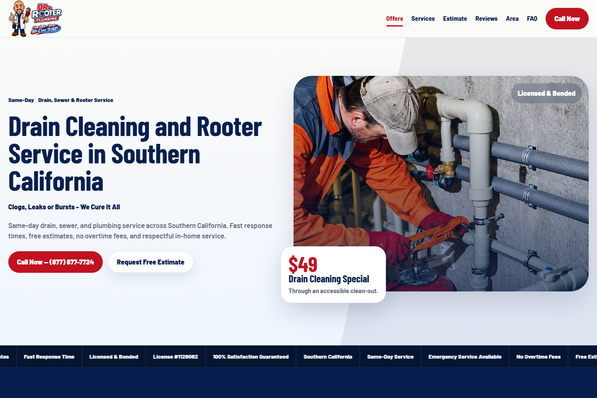
Local Service Visit websiteA local-service website structured to explain plumbing solutions clearly and make requesting help straightforward.
View live site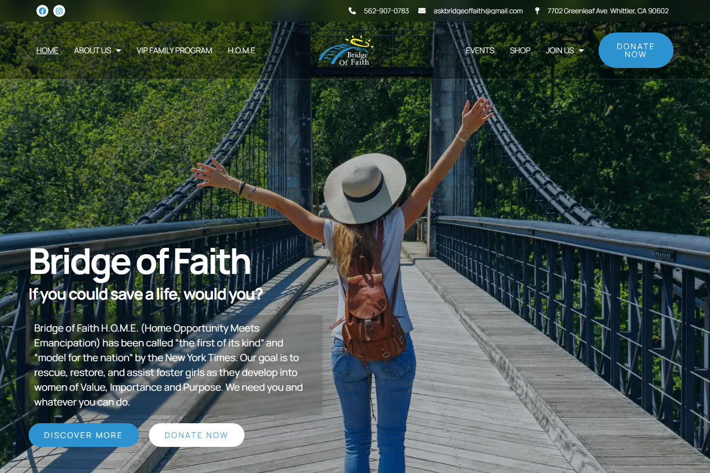
Nonprofit Visit websiteA mission-led nonprofit website that connects visitors with the organization’s work, community, and ways to support.
View live site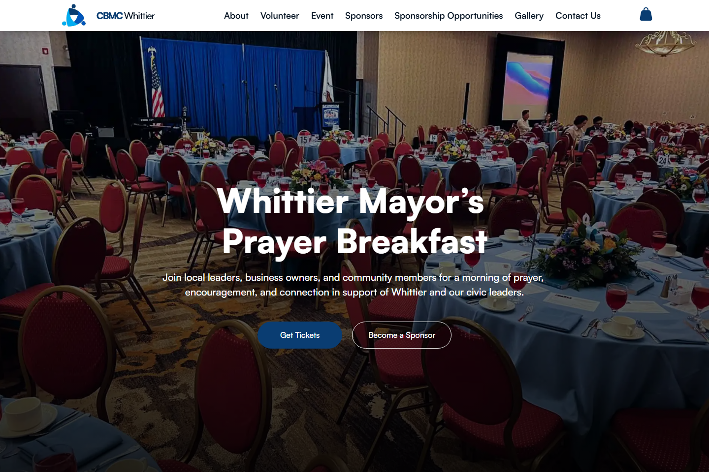
Community Event Visit websiteA community event website that gives guests an easy way to understand the gathering and stay informed.
View live site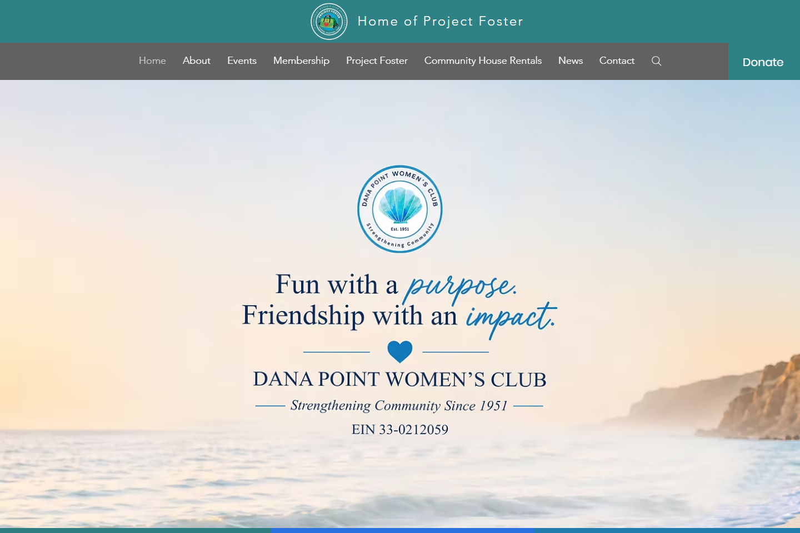
Community Organization Visit websiteA welcoming organization website highlighting the club’s story, community, and opportunities to get involved.
View live site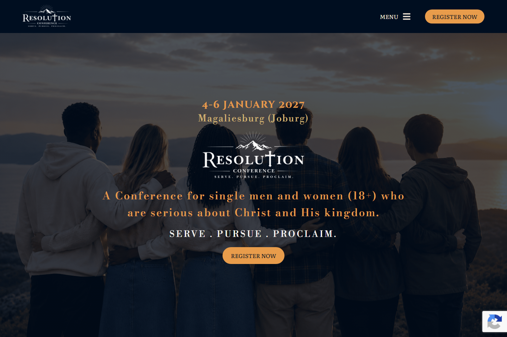
Cultural Initiative Visit websiteA focused RESCON experience that introduces the initiative and guides visitors to the information they need.
View live site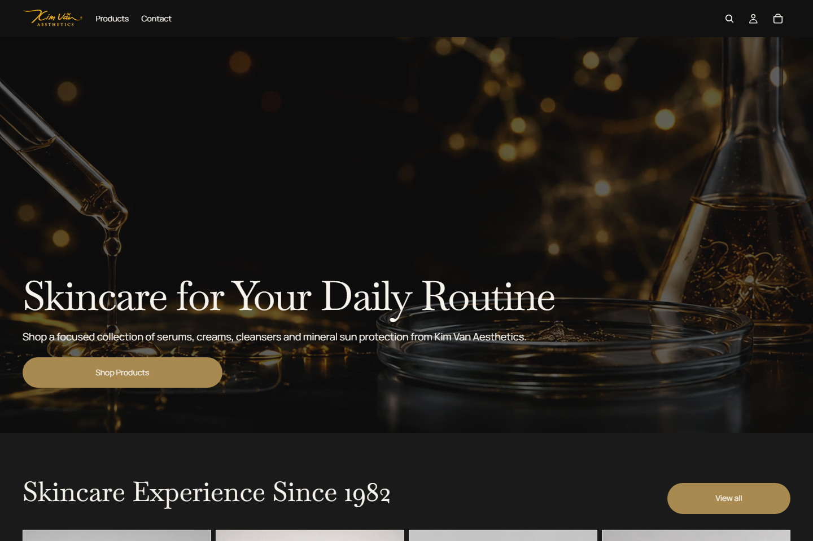
E-commerce Visit websiteA streamlined online storefront designed to make brand discovery and shopping feel simple and inviting.
View live site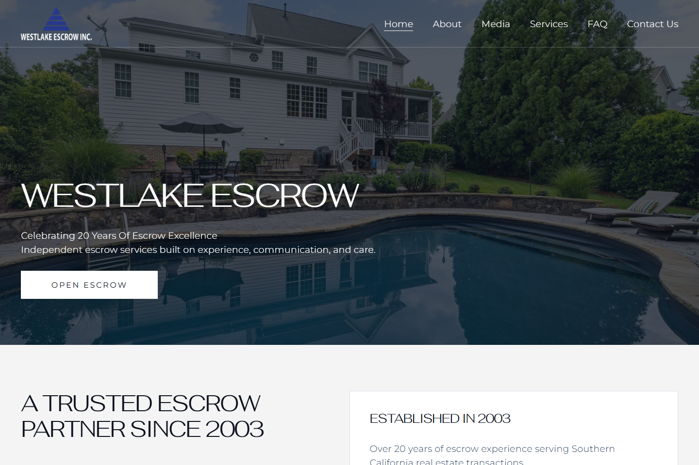
Professional Services Visit websiteA professional escrow website that presents services, expertise, and contact pathways with confidence.
View live siteI bring hands-on experience in website builds, redesigns, e-commerce, troubleshooting, QA, analytics, and ongoing platform management.